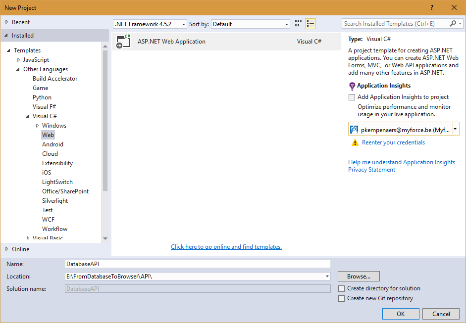
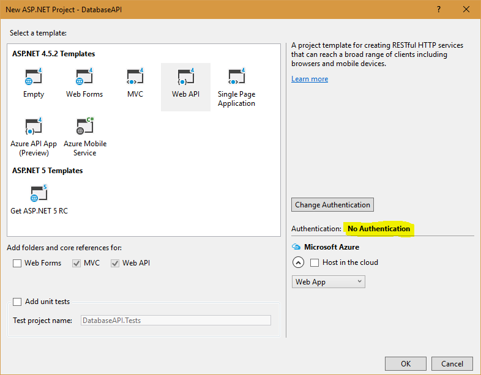
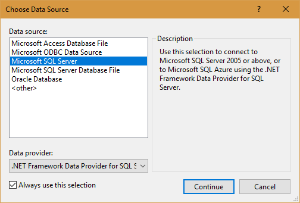
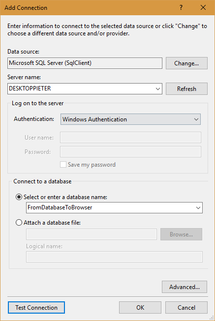
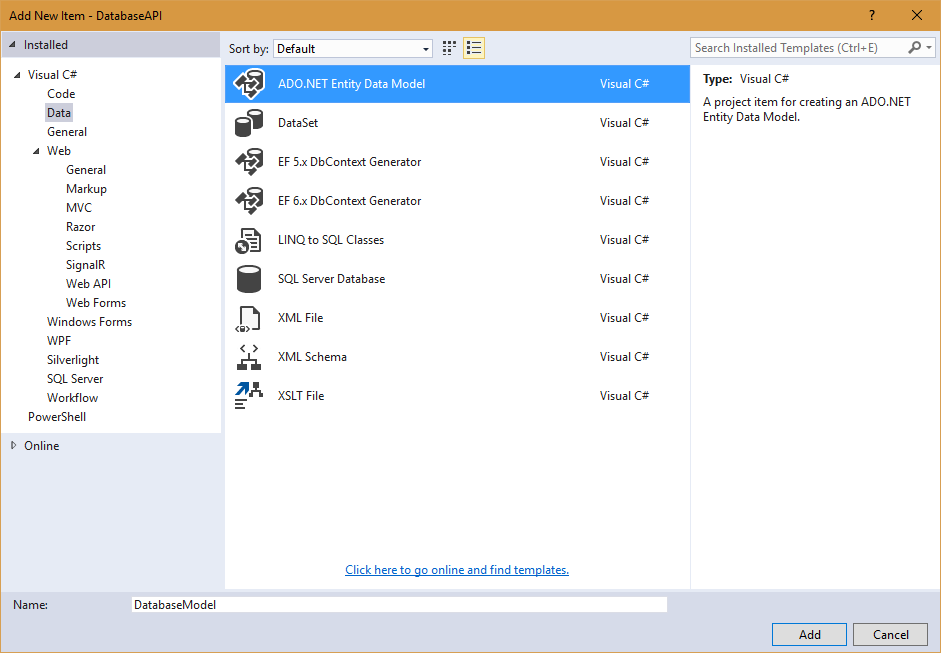
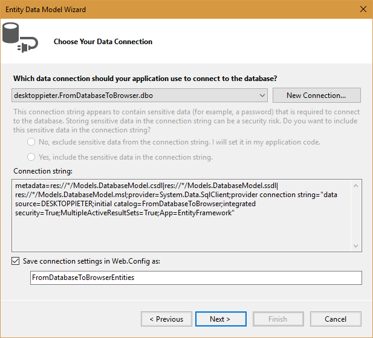
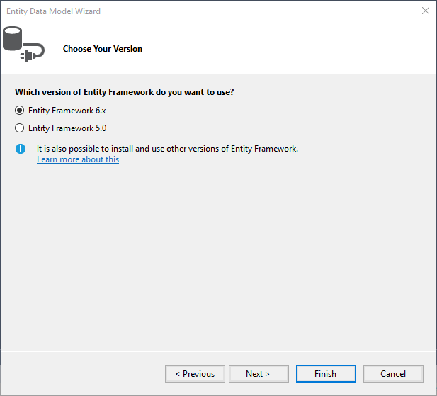
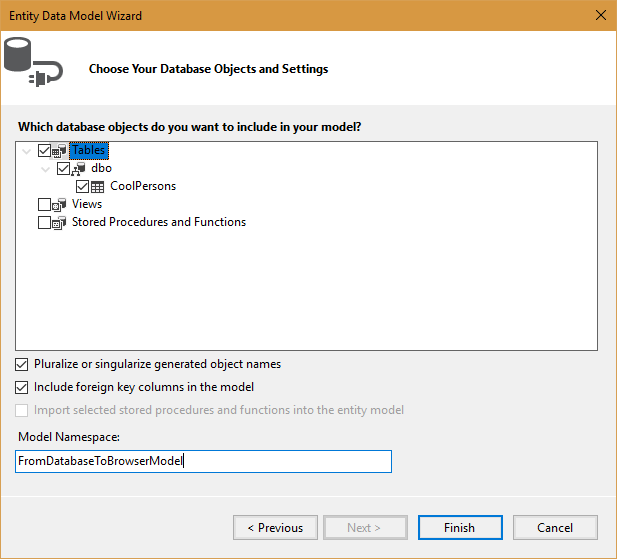
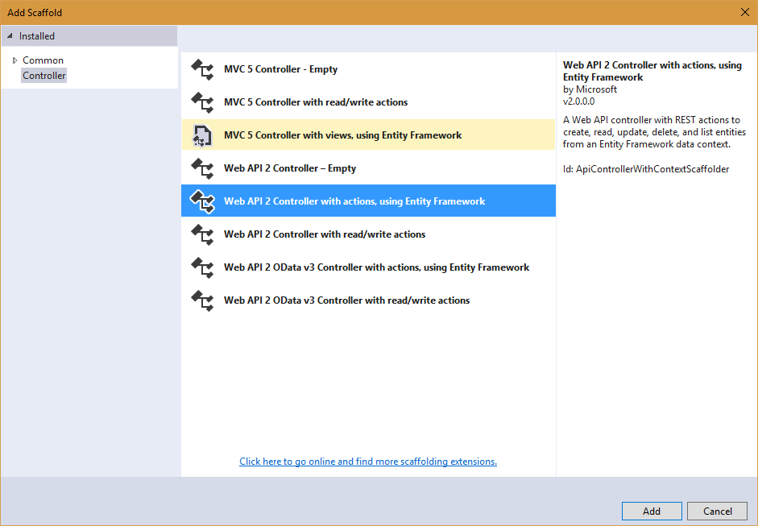
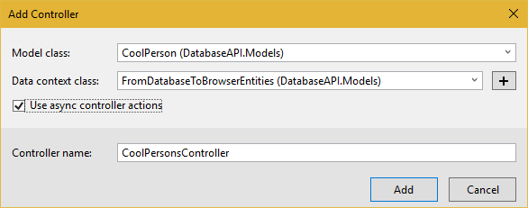

To demonstrate how easy "web development" basics are.
A DB with some data (script to run found in dbscripts folder)
Visual studio: new project
Remove authentication
Remove the place holder controller from the generated API
Add Data connection
Connect to generated DB
Add ADO.Net entity data model
Connect to database
Choose EF version
Choose DB objects to include
Build project
Add controller
Configure

[HttpGet, Route("CoolPersons/AverageCoolness")]
public decimal? GetAverageCoolness()
{
return db.CoolPersons.Average(cP => cP.Coolness);
}
Install-Package Microsoft.AspNet.WebApi.Cors
config.EnableCors();
[EnableCors(origins: "*", headers: "*", methods: "*")]
API is done
A service is a singleton that we use to let the controller access business logic (in our case do http requests to the api)
The basics are always easy